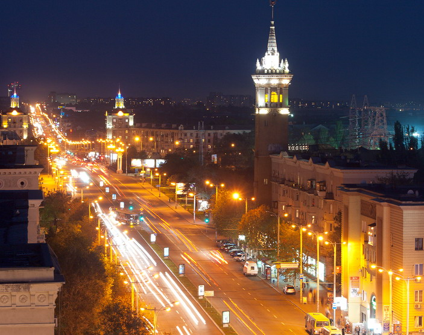

Краса Запорізького краю
Десять цікавих міст Запоріжжя

Визначні пам'ятки та знамениті люди Запоріжжя:
Хортиця;
Музей Науки у Фліка;
Бульвар Шевченка;
ДніпроГЕС;
Альтанка «Ластівчине гніздо»;
«Славутич Арена»;
Співачка Алеша;
В'ячеслав Богуслаєв;
Влад Яма;
Віктор Андрієнко;